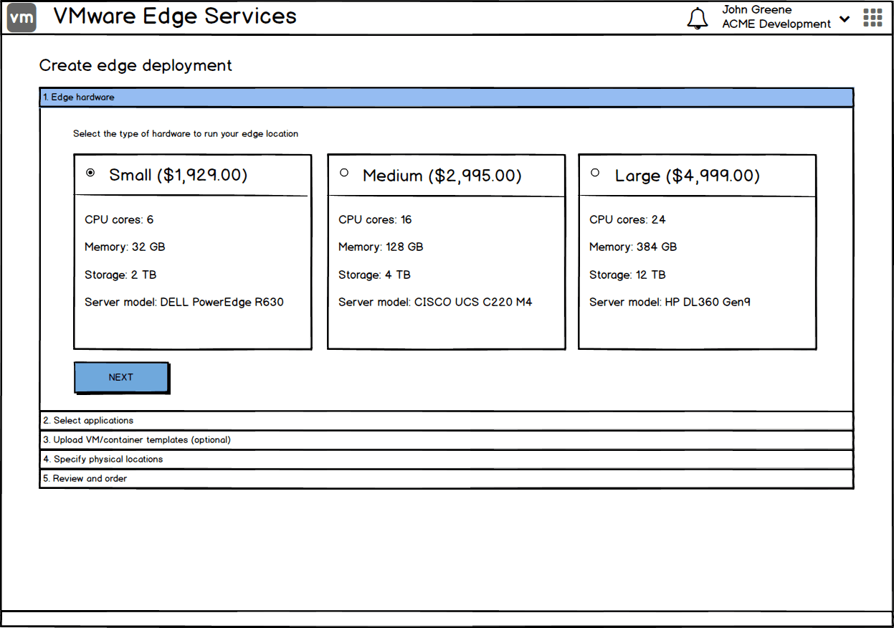
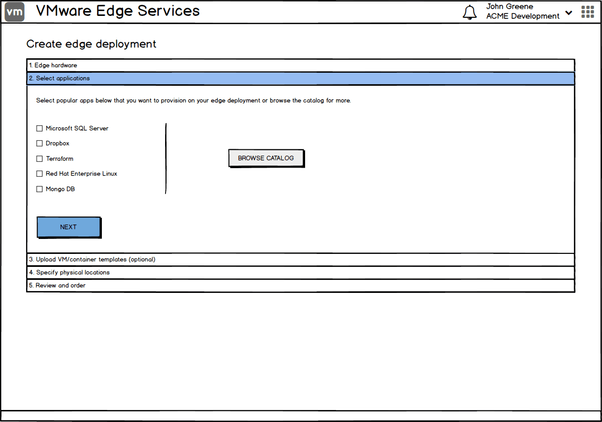
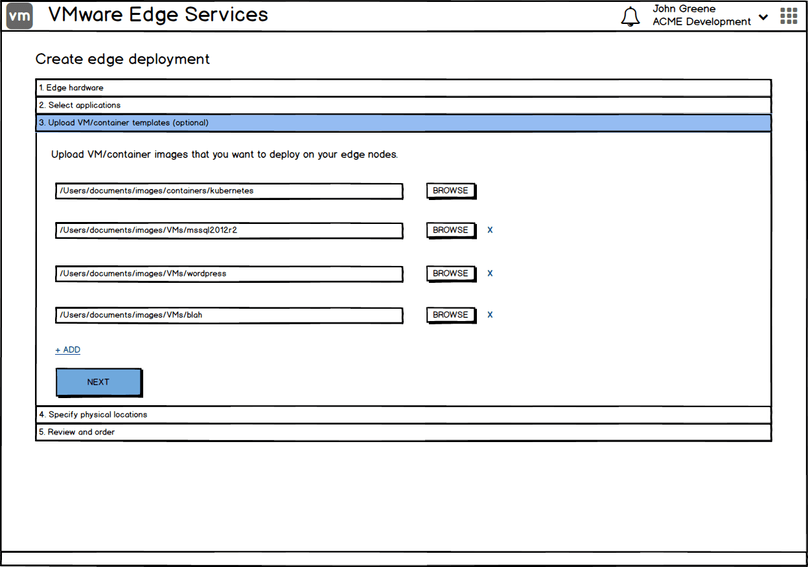
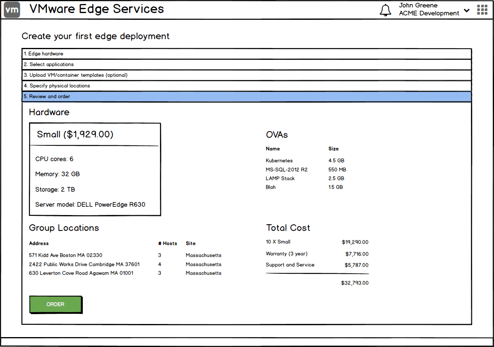
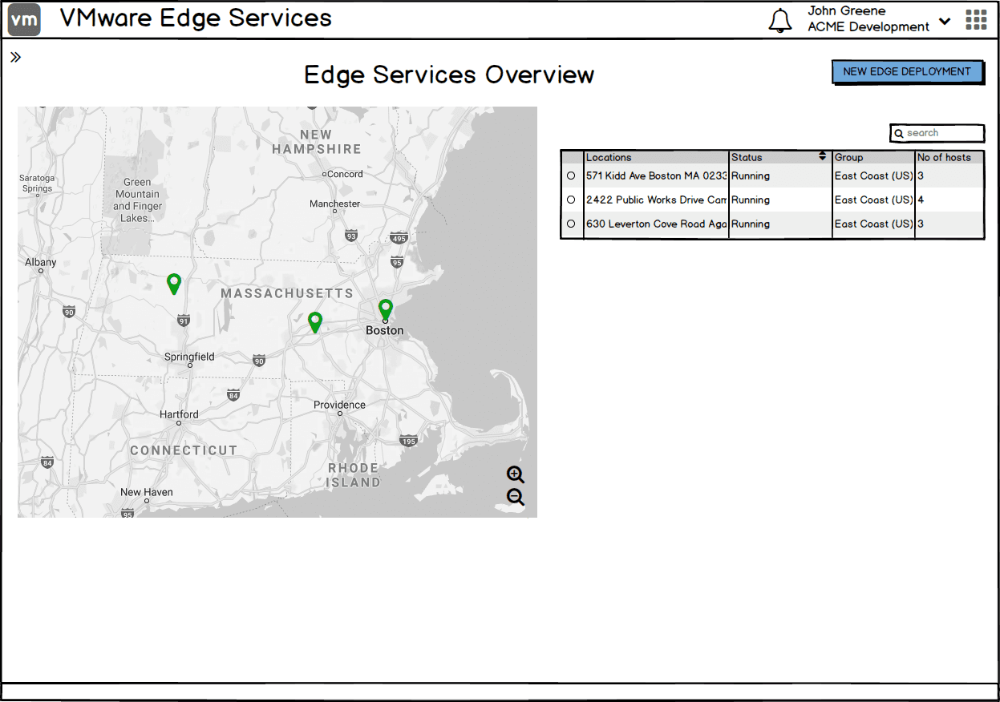
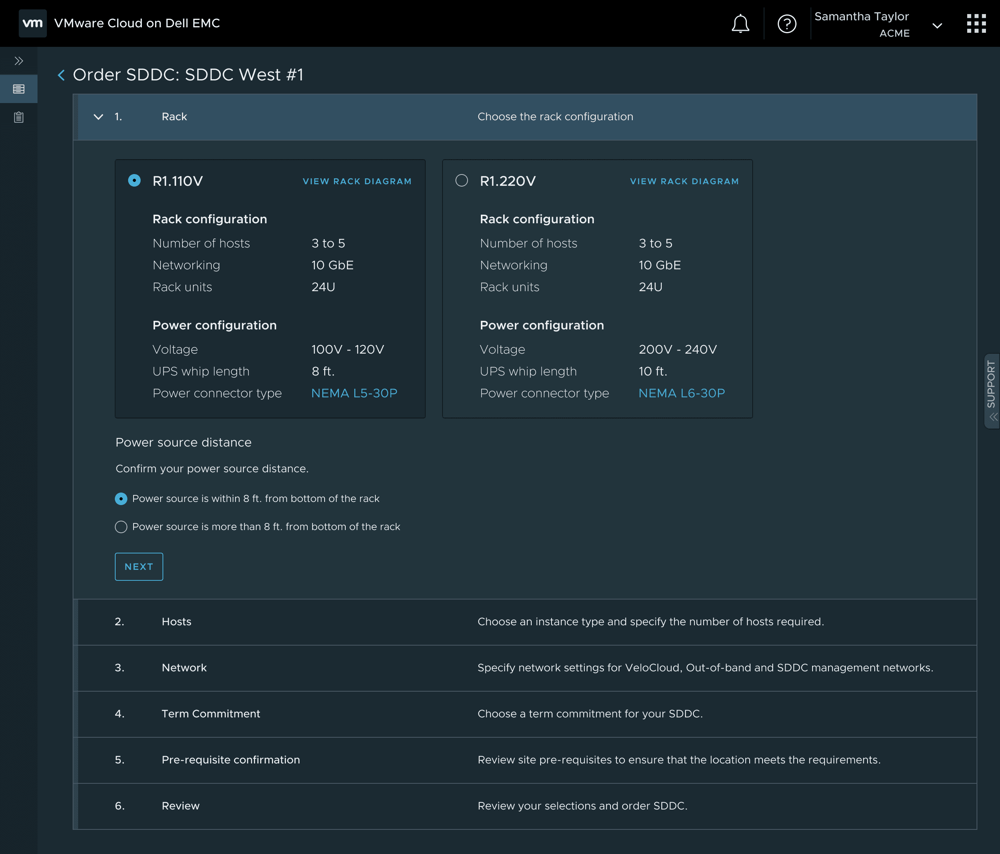
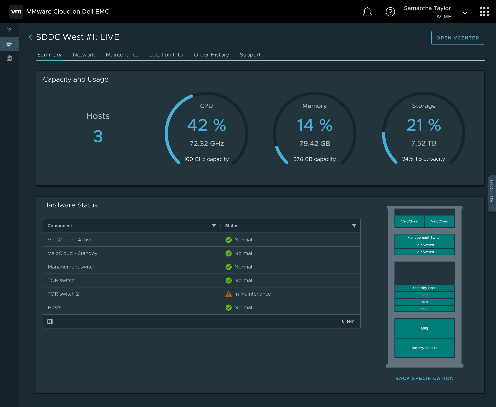

Bringing the cloud operating model to the on-premises datacenter.

Enterprise hardware procurement is a months-long bottleneck.
Enterprises needing on-premises infrastructure for compliance, latency, or data sovereignty had to navigate a fragmented, months-long process of vendor negotiations and manual deployment.
A self-service portal for managed physical infrastructure.
Partnering with product and engineering, I led the design of a self-service portal that lets IT admins order, configure, and operate fully managed physical infrastructure — Dell racks — provisioned with VMware software stack, directly from the VMware Cloud console.
Mapping the end-to-end service blueprint
Before any UI, I mapped the full service blueprint — aligning the IT admin's digital experience with backend automation, Dell factory logistics, and on-site delivery. The blueprint surfaced everything the cloud operating model would need to absorb on behalf of the user.

What enterprise IT admins surfaced.
Ordering
Want to specify additional contacts & location logistical information.
Error-prone to have site addresses and other location-specific info entered manually.
Want additional rack options — half rack is not enough.
Want additional host options — GPU-enabled, memory/performance optimized.
Want more clarity on org cloud network.
Would like to provide smaller subnets — /16 is too large.
Want further clarification on term commitments / pricing model.
Want to see pre-requisites in their respective sections.
Would like to be able to save progress at each step.
Expect to see network connectivity in the network section.
Planning
Plan/design phase important and precedes ordering phase — might require separate flows.
Want to be able to specify edge-location environment information (networking, power, cooling, rack) before ordering.
Would like to review documentation before going into the ordering flow.
Want assistance with sizing during the planning / design phase.
Processing
Want to be notified about order processing and shipment.
Post Deployment
Want to be notified about upcoming maintenance & potential downtime.
From blueprint to MVP, step-by-step.
Wireframing the digital experience
I started putting together some wireframes to illustrate what the UI could look like based on the blueprint. This helped in ensuring we were aligned with the end-to-end workflow and allowed us to iterate faster.






E-commerce for the datacenter
I designed a streamlined step-by-step ordering flow by abstracting the complexity of physical hardware procurement. Admins can select capacity, specify power drops, networking, and ship physical racks without ever leaving the digital console.

Automating deployment
Once the hardware is physically plugged in on-site, the software takes over. I designed a transparent provisioning experience that tracks the automated bootstrapping of the SDDC, completely eliminating the need for manual IT deployment.

Day-2 operations
Managing on-premises hardware is historically an operational burden. I designed a centralized fleet view surfacing real-time rack health and capacity alerts, shifting the lifecycle management entirely onto the service.

Validated in the admin's own words.
The portal is very intuitive.
Kaiser Permanente
We can now do it ourselves and not rely on partners.
Liberty Mutual
From single site to global fleet.
Beyond the MVP, I explored what fleet management could look like at global scale — a unified view for hundreds of locations, drillable from a single map. This was showcased at VMworld 2019 by CEO Pat Gelsinger and CTO Ray O'Farrell in the conference keynote.
Edge Locations
A global map view of every deployment, sized and colored by health state — critical, warning, no-hardware, good — with the location list alongside.
Regional View
Zooming reveals regional deployments with their health status — maintaining the same level of detail.

Location Drill-Down
Single-site detail surfaces hardware and service status — what the site operator and the global architect both need to see.

Operational Detail
Down to a specific rack: telemetry, lifecycle state, scheduled maintenance — the same console patterns that ordered the hardware also keep it running.

Establishing the pattern for VMware Cloud on AWS Outposts.
I conducted a cross-functional workshop with product, engineering, and design that extended the service blueprint to a second hyperscaler partner. The same MVP framework — blueprint first, then UI, then operations — became the unified standard for VMware's Cloud to Edge portfolio.
Two lessons that travel.
Service blueprinting over UI
Map the human and logistical journey first; design the digital interface second. The blueprint catches everything — from factory dispatch to on-site delivery to day-2 operations.
Abstracting complexity
Massive physical topology can — and should — sit behind a simple, familiar cloud-native UI. Operators don't need to see the wires to trust the system.